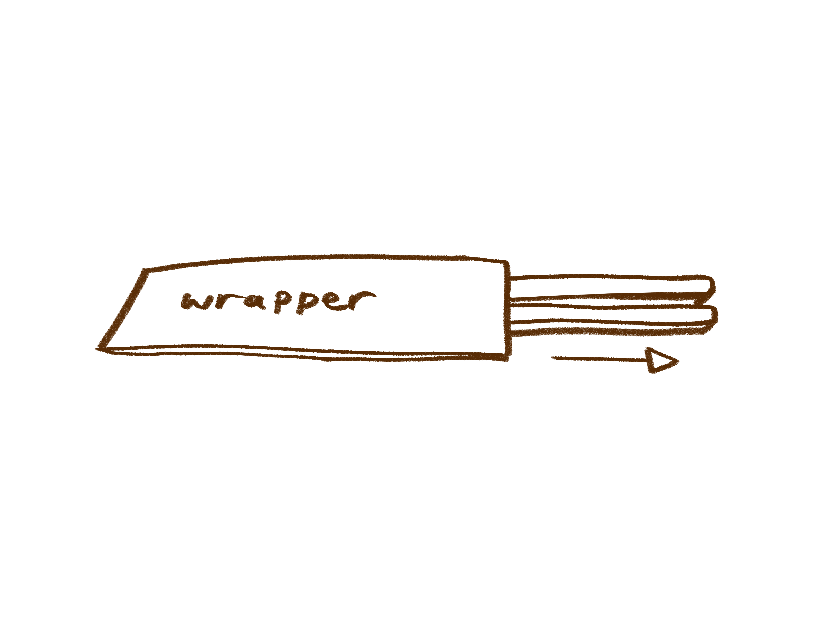
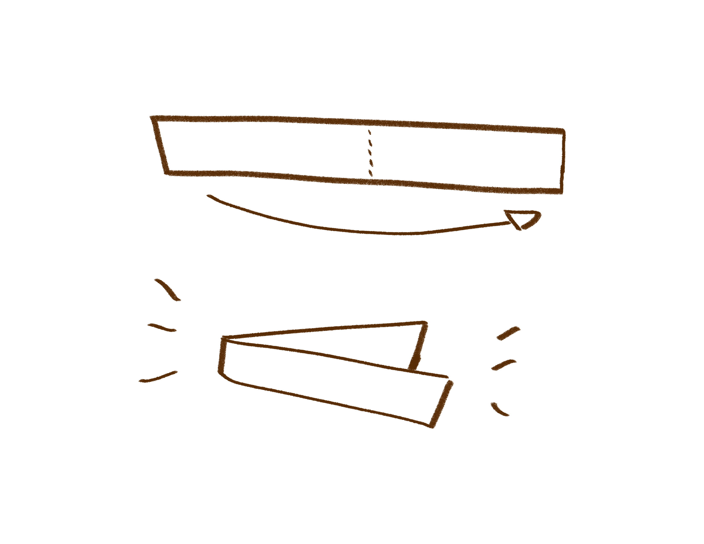
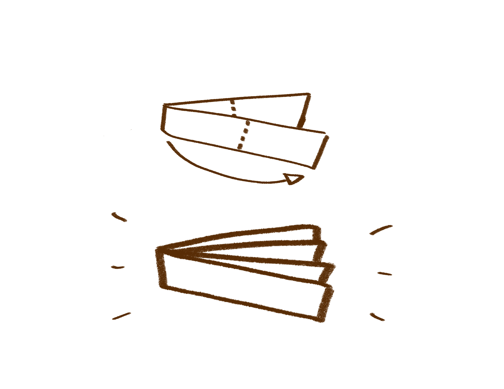
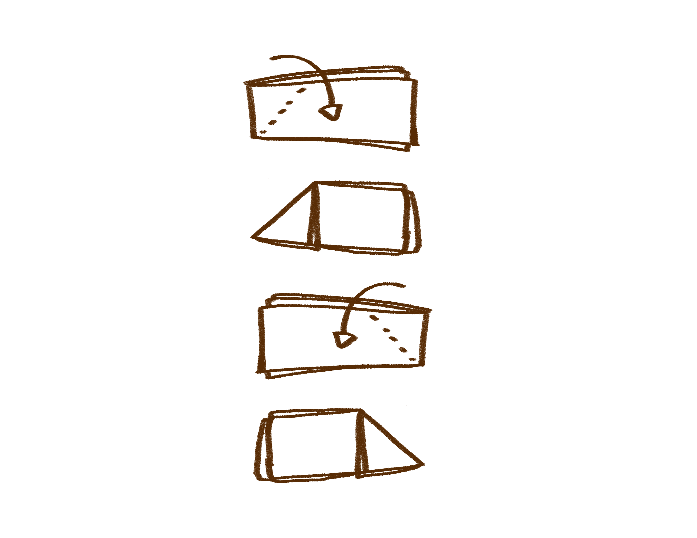
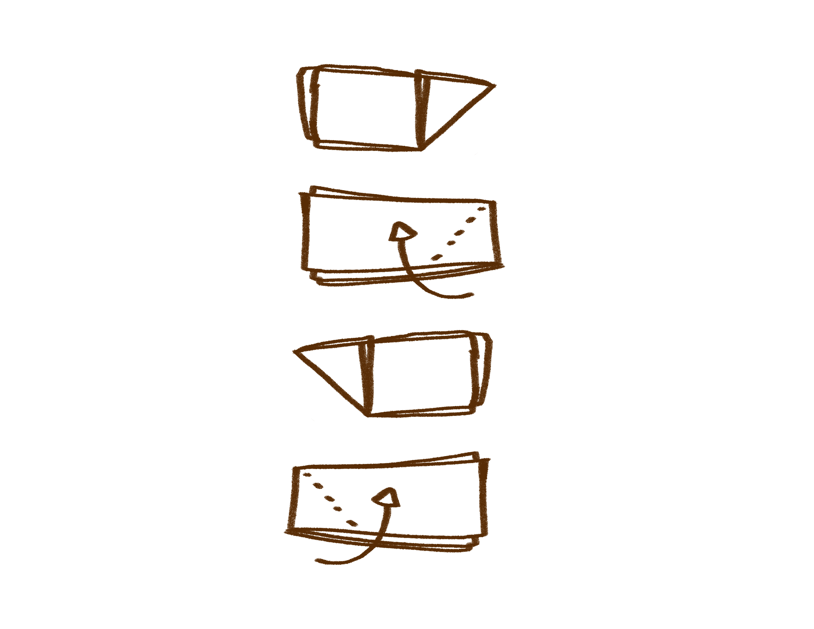
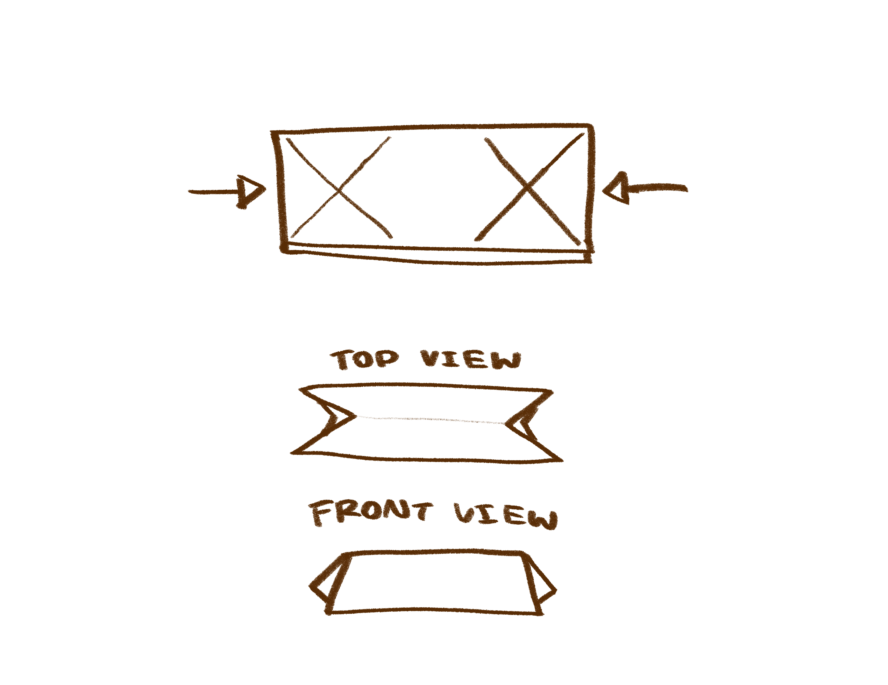
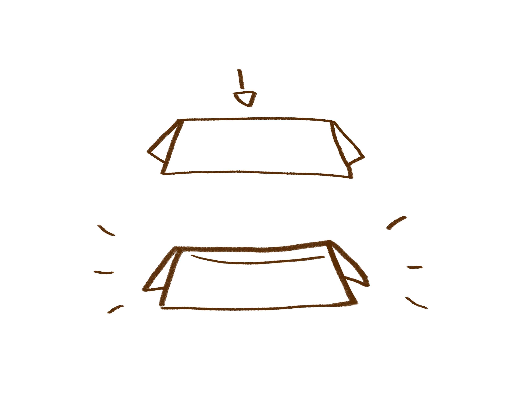

"Recipe" for How to Make a Chopstick Rest!
- First, take out the chopstick paper covering, making sure to not rip out the top.

- Fold the wrapper halfway.

- Fold that same piece halway again.

- Fold the top corners on both sides.

- Fold the bottom corners on both sides as well.

- With the corner folds, push in the middle between them to create the stand.

- Lastly, gently push down the middle of the paper to create a curved space for the chopstick to rest!

Congrats!
You have successfully made a chopstick rest out of the wrapper. Now, you can use this cool skill and use it for any restuarant you go to!